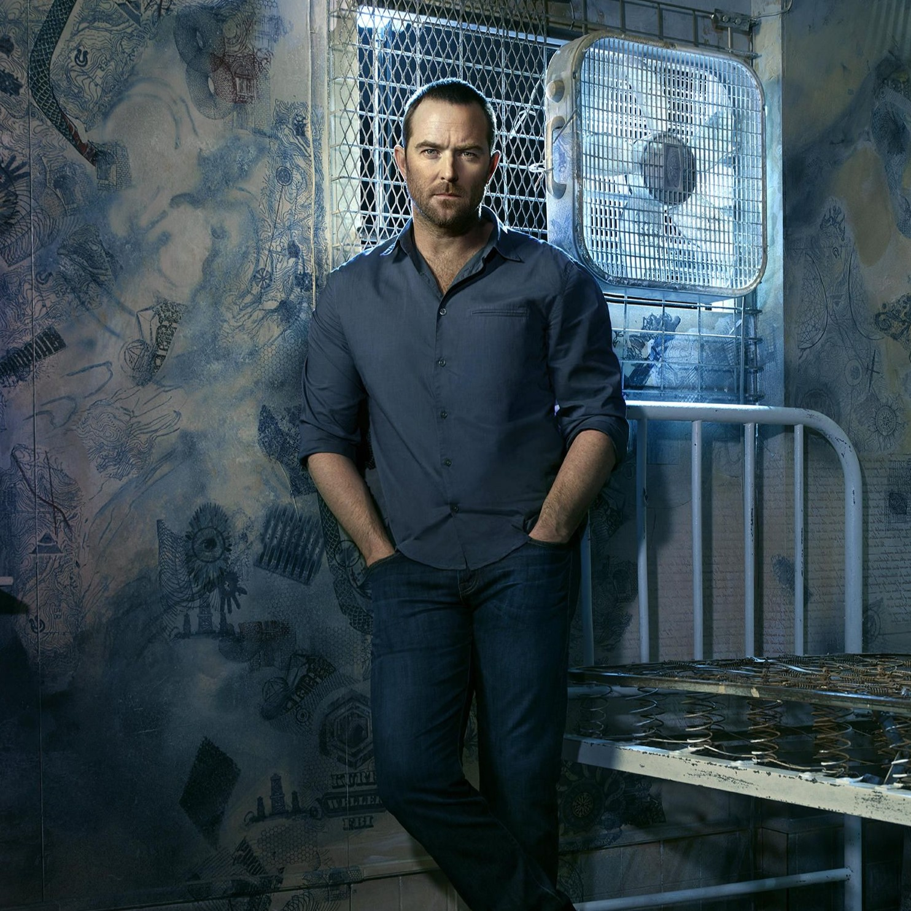
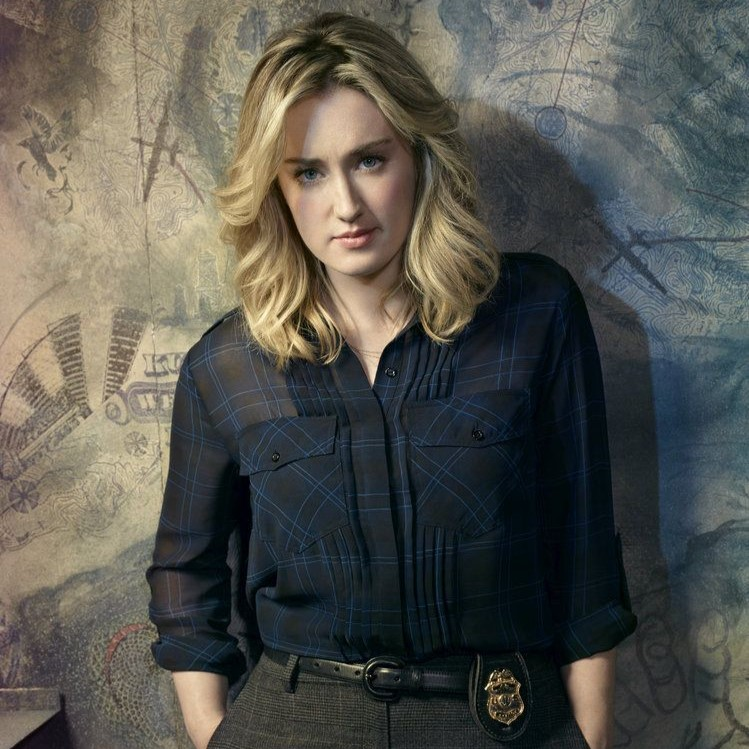
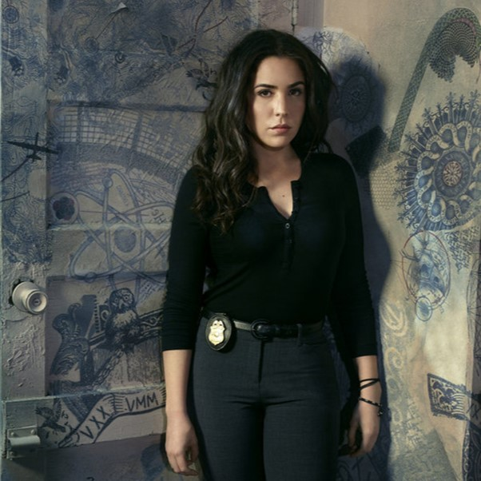
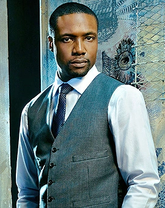
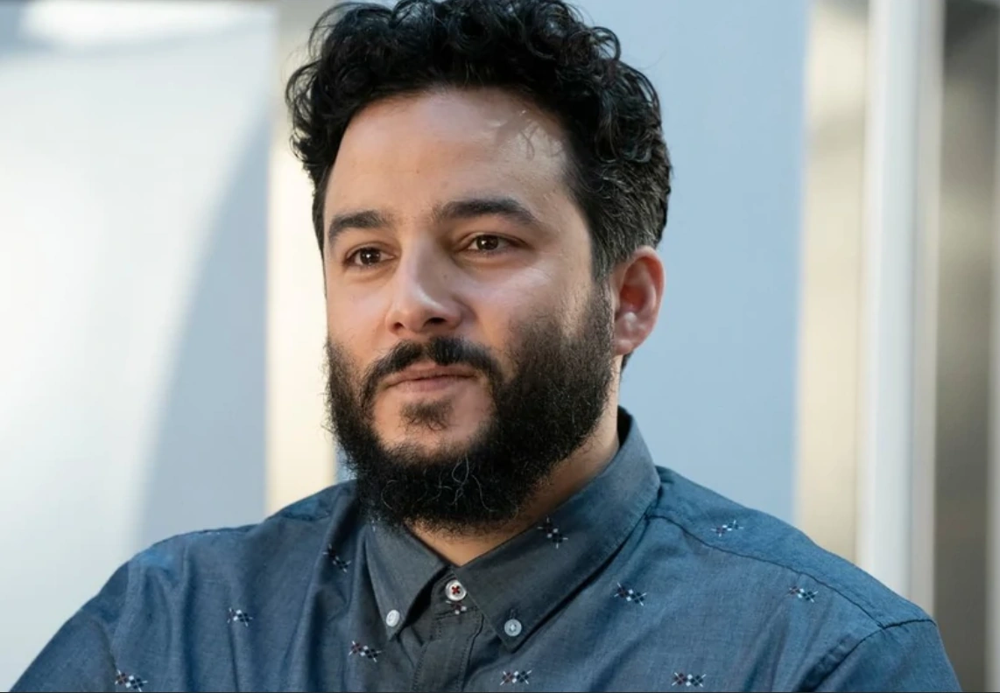
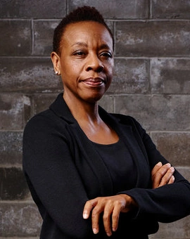

Principais personagens
Jane Doe
(interpretada por Jaimie Alexander)
Jane Doe é a personagem central da série, uma mulher misteriosa encontrada sem memória em Times Square, coberta por tatuagens enigmáticas que revelam pistas sobre crimes futuros.
Kurt Weller
(interpretado por Sullivan Stapleton)
Kurt Weller, um agente do FBI que lidera a equipe encarregada de desvendar os mistérios por trás das tatuagens de Jane e resolver casos complexos.
Patterson
(interpretada por Ashley Johnson)
Patterson, uma especialista forense altamente inteligente e parte integrante da equipe do FBI. Ela é responsável por decifrar as tatuagens e fornecer informações cruciais para resolver os casos.
Tasha Zapata
(interpretada por Audrey Esparza)
Tasha Zapata, uma agente do FBI com habilidades excepcionais em campo. Sua lealdade à equipe é testada ao longo da série.
Edgar Reade
(interpretado por Rob Brown)
Edgar Reade, um agente do FBI com uma história complicada, cujo relacionamento com outros membros da equipe é explorado ao longo da série.
Rich Dotcom
(interpretado por Ennis Esmer)
Rich Dotcom, um hacker extravagante e carismático cujas habilidades são frequentemente requisitadas pela equipe para resolver casos complicados.
Roman
(interpretado por Luke Mitchell)

Roman, o irmão de Jane, cujo papel na série é complexo e central para a trama. Ele é uma figura importante na exploração do passado de Jane.
Mayfair
(interpretada por Marianne Jean-Baptiste):
Bethany Mayfair, uma agente de alto escalão do FBI com uma conexão crucial com o passado de Jane.